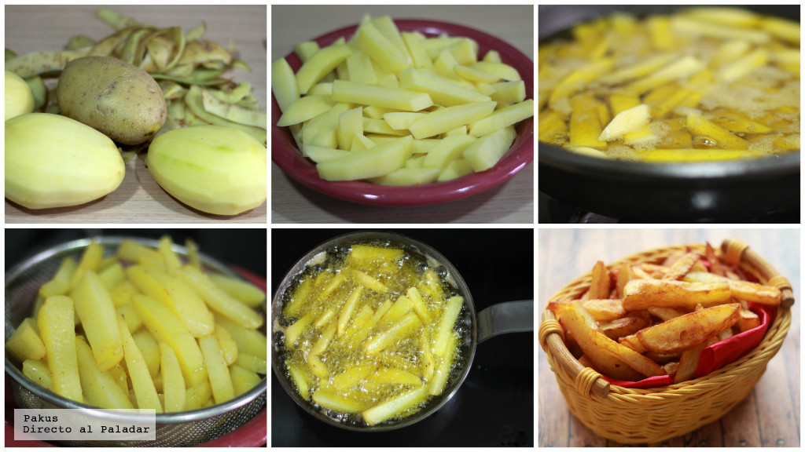

Receta de papas fritas
Para esta receta necesitarás los siguientes ingredientes:
Porción para dos personas aprox.
- 4 papas granades
- 2 tazas de aceite vegetal
- sal al gusto
Recomendamos que al elegir las papas sean las Monalisa o Kennebec.
Pasos a seguir para que tus papas queden deliciosas:
- Pelar las papas
- Cortarlas en rodajas de aproximadamente 1 cm.
- Cortar cada rodaja en varitas de 1 cm. de ancho y 5 cm. de largo
- Calentar el aceite en el sartén
- (Opcional) Remojar las papas, máximo 15 minutos para eliminar el almidón que tienen las papas y así evitar que se peguen al freírse. Posterior al tiempo de remojo, secarlas bien.
- Asegurarse de que el aceite esté bien caliente introduciendo una papa para probar
- Sumergir las papas en el aceite caliente por unos 10 minutos aproximadamente
- Reposar las papas sobre papel absorbente para retirar el exceso de aceite
- Agregar sal al gusto
- ¡Disfruta tus papas fritas!
